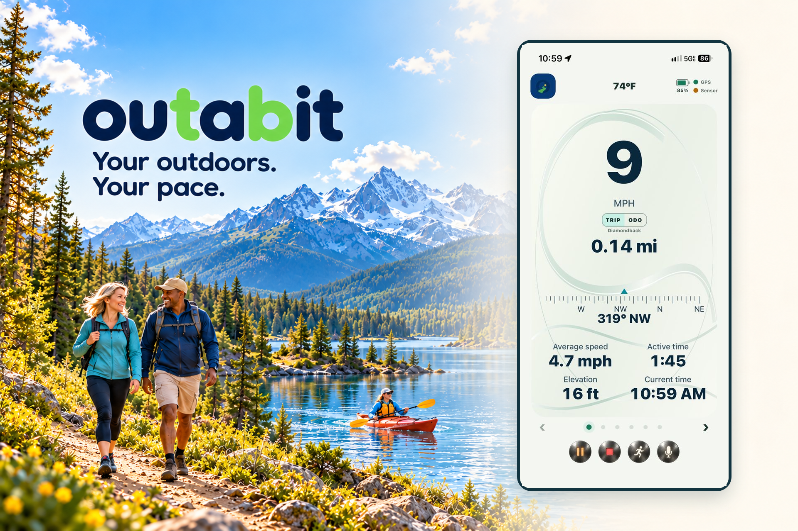

outabit 1.2 is a public iPhone release. Android beta access and optional iPhone TestFlight access are still handled personally by the outabit team.
↗ GPS routes
⌁ Your activities
△ Personal goals
≈ Outdoor memories
One outing at a timeMake it yours
Get outside a bit
A little inspiration. Your next outing.
Take 20 seconds to picture your next bit of time outside.
Press play to watch with music. The video will not start automatically.
Building outabit together
Downloads, updates & installation.
See what is available for your device, what changed between releases, and how to install or update. Work in development is listed separately and is not a promise of availability.
iPhone
Available on the App Store
outabit 1.2
Released: · Requires iOS 15.1 or later
What's new
New outabit branding, artwork, and startup screen.
Custom activities, personal goals, My Bikes odometers, and same-day outing continuation.
Spanish language support and refined light and dark dashboards.
Clearer bicycle and sensor setup, phone battery information, and weather briefing updates.
Install or update
Open the official App Store page to download the public iPhone release.
Open the App Store link below on your iPhone or iPad.
Choose Get or the download button and install version 1.2.
If you already use a TestFlight build, keep it installed and contact support before deleting the app if you need update help.
A dedicated Lap Dashboard with a neutral Time or Distance reference, lap-history wheel and optional automatic focus after recording a lap.
Six coordinated appearance palettes with live dashboard previews and an Appearance long-press shortcut.
Clearer activity dashboards with larger speed readings and aligned Trip and Odometer values.
Fixes
Sleeping bicycle sensors no longer hold one connection attempt indefinitely; bounded attempts keep retrying and the generic disconnected warning waits two minutes.
History and Trip reports now target support@outabit.com.
Finish has a safe Cancel path, controls have more forgiving touch areas, and routine continuation or startup sensor notices can be acknowledged.
Known issues
The green return arrow can overlap the bottom map legend on the Map & Digital Dashboard.
The new sleeping-sensor retry behavior passed automated tests but still needs a sleeping physical-sensor test on this build.
Please help test
Start with the bicycle sensor asleep, wake it within two minutes, and confirm the indicator changes from amber to green and readings begin.
Review Screens 1 through 4 in portrait and landscape, especially speed, Trip and Odometer alignment.
Press Lap with automatic focus on and off, then check the neutral reference and lap-history wheel.
Found a problem? Tell us your device, app build, what happened, and what you expected. Please do not include private route or location data unless needed and requested. Contact support.
A kinder kind of activity app
No leaderboard. No pressure. Just your next reason to head out.
Choose the activity that fits the day. Set a personal goal by distance or active time, then let outabit keep the useful details together.

Your outdoors. Your pace. A look at the outabit dashboard.
A simple rhythm
From idea to outdoor memory.
outabit is built to stay out of the way while you are outside—and be helpful when you look back.
01
Pick your way outside
Choose the outdoor outing you want to track with GPS.
02
Choose a goal that fits today
Use distance or active time. Your goal is personal and stays in your control.
03
Keep the route and the moment
Build a route history, track your bike odometer, and share the outdoor memories worth keeping.
Today’s plan45 active minutesChange it whenever you like
The useful details
A record of where your time outside takes you.
Come back to the routes, milestones, and memories that matter—without turning every outing into a competition.
⌁
Route history
See the paths you have taken and revisit the outings you enjoyed.
◉
Bike odometer
Keep a practical running record of the distance on your bike.
✦
Outdoor memories
Share the moments that make getting outside feel worth it.
＋
iPhone 1.2 · Android v32 beta
Custom activities, your way
Available in the public iPhone release and current Android beta: outabit tracks outdoor outings with GPS rather than limiting you to a fixed activity list. Add and name activities, arrange or hide their Home buttons, and choose activity-specific goals and default dashboards.
Hiding an activity keeps its history. See Beta updates for platform-specific release details.
Learn at a glance
Short guides for your next outing.
Start with the basics, then customize your activities, dashboards, appearance, and laps. Each playlist opens on YouTube in a new tab.
Getting Started with outabit
Learn how to start and finish an outing, pause and resume, review history, set a personal goal, and view activity totals.
Four short tutorials cover reading the main dashboard, choosing a dashboard for an outing, portrait and landscape views, and dark or light theme colors.
Android beta access and optional iPhone TestFlight access are available by request. For the regular iPhone release, download outabit from the App Store. For beta access, tell us who you are and which device you plan to use, and we’ll prepare an email with your answers for you to review.
You still need to press Send. The website only opens a draft in your email app; it does not send or store your request automatically.
Your request is ready
Tap the button below to choose Gmail or iOS Mail. Review the completed request and press Send in your email app—the website has not sent it. If no email app opens, copy these details into a new email to support@outabit.com.